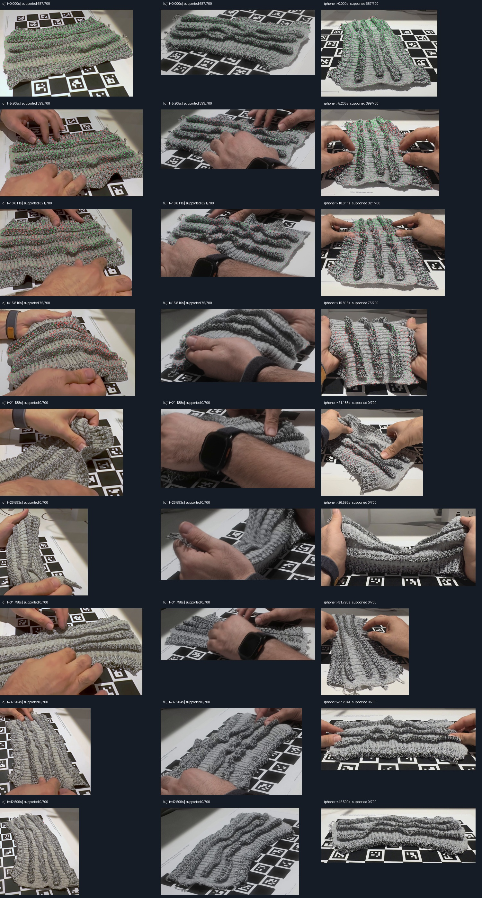

STAGE 05 · full-sequence material tracking rejected · 2026-10-08T15:27:20.392931+00:00
Long tracking test fails through large folds
CoTracker3 initialized 700 spatially distributed nodes and improves early coverage substantially. Only 70 of 214 samples retain at least 100 multiview-supported nodes, and all triangulated support disappears after 20.587 seconds. Long-term knit identity still fails through hands and folding. This trial is retained and will not be used to invent full-sequence material deformation. Dense per-time multiview reconstruction is being tested for complete RGB shape replay; such frames do not prove persistent material identity.

Diagnostic from real source images or model renders; not a desktop screenshot